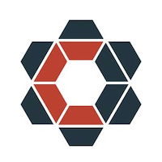

「まずは、手を動かすところから始めましょう！！」をモットーに座学とハンズオンをベースとした、Docker、Kubernetesの初心者向け入門トレーニングです。トレーニングを受けてカンファレンスに臨みましょう！
※会場はイオンコンパス 大阪駅前会議室 Room Cとなります。カンファレンスとは別会場となりますのでご注意ください。
お申込は【こちら】
[basic]は申込者数が最少催行人数に満たなかったため、中止とさせていただきます。ご了承ください。
